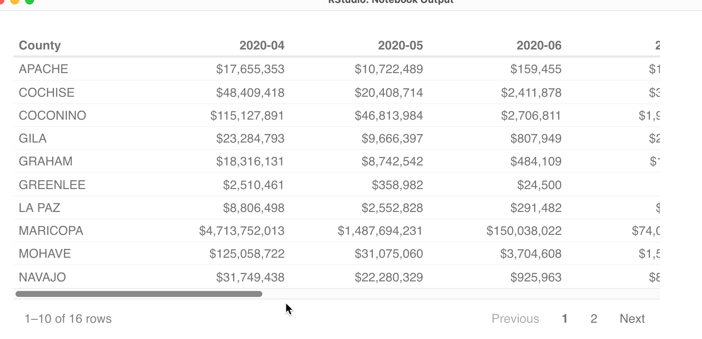

select_ppp <-
ppp_orig %>%
filter ( project_state == "AZ" & !is.na (project_county) ) %>%
mutate ( forgiveness_amount = if_else (is.na(forgiveness_amount),
0,
forgiveness_amount)) %>%
select ( borrower_name, borrower_city,
naics_code,
amount, forgiveness_amount,
date_approved, forgiveness_date)
sectors <-
naics_codes %>%
select ( naics_code, sector_code, sector_desc)
select_ppp %>%
left_join ( sectors, by="naics_code") %>%
select ( borrower_name, forgiveness_amount, sector_desc) %>%
head(5)21 Recipes
This final chapter on data wrangling in R simply puts together a lot of the code snippets that are easy to forget, and adds some more advanced code examples that you can adapt to your work. There is minimal explanation. Instead, look at at the relevant chapter for more explanation. Over time, I’ll add section links to the examples.
You can copy and paste these into RStudio’s snippets and use them directly in your program – then you just have to change the references to the variables in your own work.
These examples use the data from the other chapters, from the PPP program.
R annoyances and errors
There are several annoyances that aren’t consistent from one function in R to the next. When you’re having trouble, look for
Quoting issues - what kind of quotes, whether they’re needed, and if they’re matched open and closed.
-
Unmatched or missing parentheses
Putting words on the wrong side of equal signs. To create a new column name, put it on the left. To identify a column to be used as an argument, put it on the right. To filter a column, use two equals signs, with the column name on the left.
Are you working with a list of items? If so, you need to wrap them in the
c()function, for “combine”Case-sensitivity in column names; back-ticks for more than one word in a column name rather than quotes.
Missing or hanging pipes (%>%)
These are the problems that will fix about 80 percent of the code that won’t run once you get more used to it.
21.1 Re-using answers from a previous step
Assign your code chunk to a new variable in the environment to use it again later. This is usefule when:
- You have a complex filter that you want to apply to future steps.
- You are joining data frames with columns having the same names: select just the columns you need and re-name any of the ones that are the same, except for the join one.
- You have fixed some column types or adjusted their values.
The assignment operator is <-, which means “pour the answer into this variable name”
These can all go into one code chunk if you’d like:
21.2 Filtering
- One condition that’s a number :
filter ( amount > 1000 )- A number between two values
filter ( between ( amount, 0, 1000))- An exact phrase or word
filter ( project_county == "MARICOPA")- One of several possible entries in one column (exactly)
filter ( project_county %in% c("MARICOPA", "PIMA", "PINAL" ))- Everything except missing values
filter ( ! is.na (project_county) )- Between two dates date[^Be sure it’s really a date in the data by glimpsing your data frame. If not, turn it into a date first]
filter ( approval_date >= "2021-01-24" &
approval_date <= "2021-01-31")- Phrases, words or letters at the beginning of a column
filter ( str_detect (borrower_type , "^Non-Profit"))- Phrases, letters or words at the end of a column
filter ( str_detect (borrower_type, "Corporation$"))- A word that isn’t part of another word
filter ( str_detect ( "\\bNation\\b"))All of these examples can be used in a mutate statement to create flags or new values if the conditions are met.
21.3 Aggregate (count, sum rows by category)
- Counting (How many?)
group_by (project_county) %>%
summarise (loans = n() ) %>%
arrange ( desc ( loans ))Make sure you don’t name the new column containing the count the same thing as a group_by() column.
- Shortcut for counting:
count( project_county, sort=TRUE, name="loans")- Counting unique entries
Sometimes you want to know how many items of a type, not how many rows, are included in a category.
group_by ( project_county) %>%
summarise ( number_of_loans = n(),
number_of_industries = n_distinct ( naics_code )
)- Summing (how much?)
group_by (project_county) %>%
summarise ( total_amount = sum (amount, na.rm=T))- Shortcut for summing:
count ( project_county, weight=amount, name="total_amount")21.4 Recoding categories
You’ll often want fewer categories, or numbers in categories, that you want to use instead of the original values. This is done in a mutate statement. Don’t forget to save the output to a new data frame (<-), or you won’t have access to it later on.
- Create yes-no categories . This is really “Yes”, “No” or NA, where there is an NA to begin with.
mutate ( corp_yn = if_else
(str_detect (borrower_type,
"Corporation"),
"Yes",
"No")
)- Recode into more than two categories, example using
str_detect()
mutate ( new_type = case_when
(str_detect (borrower_type,
"Corporation|Company") ~ "
For-profit company",
str_detect (borrower_type,
"(Non-Profit|Cooperative|Association)") ~
"Non profit",
str_detect ( borrower_type,
"(Sole|Self-Employed|Independent)") ~
"Individual",
TRUE ~ "Everyone else")
)You’ll want to check them when you’re done to make sure:
new_dataframe %>%
count ( new_type, borrower_type)to make sure you coded them properly. Too many NA values means you likely misspelled something or left something out.
- Recode numbers into categories
It’s often useful to give them numeric codes in front so they sort properly:
mutate ( new_type =
case_when (
amount <= 1000 ~ "00-Very low",
amount <= 10000 ) ~ "01-Low",
amount <= 100000) ~ "03-Medium",
amount > 100000 ~ "04-High")
)This works because the first one that it finds will be used, so a value of exactly 1,000 would be “Very low”, but a value of 1,001 would be “Low”.1
21.5 Working with grouped data for subtotals, changes, percents
- Percent of total by group
group_by ( project_county, sector_desc ) %>%
summarise ( loans = n() , .groups="drop_last") %>%
mutate ( pct_in_county = loans / sum(loans))- Display results as in spreadsheet form
To see the items across the top, use pivot_wider.
group_by ( project_county, new_type) %>%
summarise ( loan_count = n() ) %>%
pivot_wider ( names_from = new_type,
id_cols = c( project_county),
values_from = loan_count)You can add an argument after values_from if you know that any missing values are zero, by using values_fill=0
You usually only choose one column to show down the side, one column to spread across the top, and one column to display the value.
-
Complex example: Get the change by year within each county.
annual_ppp <- mutate ( approve_year = year (approval_date ) ) %>% group_by ( project_county, approve_year) %>% summarise ( loans = n() , amount = sum( amount, na.rm=T), .groups=“drop_last”)
Next, compare them within groups. New functions introduced: complete(), which fills in missing information in a sequence. For example, if there were missing years by county, it would create a row to fill it in. lag() refers to the previous item in a group. First, make a new, summarized data frame with just the columns you nee
complete ( project_county, approve_year,
fill= list (amount=0, loans =0) )%>%
mutate ( change_loans = loans - lag(loans),
pct_change_loans = change_loans / lag(loans) * 100) -
Pick out the last item in a group, with all of its columns. New verb introduced :
slice_tail(). This is particularly useful for chronological events, such as the last thing that happened in a court case, or the most recent complaint against a police officer. This example isn’t a great one, but it gets you the name and other details of the most recent loan for each lenderarrange ( lender, date_approved) %>% group_by ( lender) %>% slice_tail()
21.6 Do the same thing on many columns at once
These examples use a new concept, called across. It’s a way to do the same thing to all of the columns at the same time, replacing the original value with a new one. They can be tricky to write, and I’m not sure I understand them completely. They can also be really, really slow on large datasets.
- Convert all character columns to upper case for easier filtering
mutate (across ( where (is.character) , toupper))- Strip all punctuation from a set of columns for easier filtering and grouping
New functions introduced: str_squish() to remove extra blanks, and str_replace_all() to replace all punctuation with nothing. The ~ is needed to put an expression when you use “across” to refer to a bunch of columns at the same time.
mutate ( across ( c(borrower_name, borrower_address, borrower_city), ~str_squish(
str_replace_all ( ., "[:punctuation:]","")
)
)
)21.7 Better looking tables
One of the big annoyances in R is that the results are, well, unreadable. Numbers aren’t formatted, you can’t see all of the data you want, and it’s hard to share the results.
Think of this as a quick tour of some options you have to make better looking tables and readable output. In practice, I use one of three:
reactableprovides a powerful way to make sortable, searchable tables in your markdown. It’s great for sharing data with people who just want to explore it. Just be careful not to include so many rows that it can’t be opened effectively in your browser.gtmakes very professional looking static tables, such as those you might see in a book. They’re good for labeling, footnotes and other details when you don’t want anyone to change anything.
Both reactable and gt will produce subtotals and other math , meaning you can show multiple levels at once. The examples will use the PPP data for each county in Arizona by month.
Strategy
Typically, you’ll do all of your data processing in a series of steps that culminate all of the columns you’ll need for any table you want to make – this will include any grouping, joining or computations that you’ve already made.
This can be a challenge to get right on sorting, but it otherwise works OK.
Make the data frame you want to display and save it
This example:
Converts dates to months by converting it to a character column formatted as the year-month to keep a sort order proper.
Replaces missing counties with “UNKNOWN” and keeps only those in Arizona.
Computes totals by month.
Saves it to a data frame called
ppp_fortable.
ppp_fortable <-
ppp_orig %>%
# sort in order so that the months aren't alphapbetized or dependent on the first county
arrange ( date_approved) %>%
mutate ( month = format(date_approved, "%Y-%m"),
project_county = replace_na(project_county, "UNKNOWN")) %>%
filter ( project_state == "AZ") %>%
group_by ( project_county, month) %>%
#this at least shows you commas in the values. I haven't had luck using currency on this.
summarise ( loans = n(),
total_amt = sum(amount),
.groups="drop"
) Reactable: Sortable, searchable tables with formatted numbers
This is how you can make a sortable, searchable table. The syntax and grammar of this is completely different than what you’re used to because it’s an implementation of a Javascript library:
ppp_fortable %>%
reactable ( defaultPageSize = 15,
defaultColDef = colDef ( filterable=TRUE,
sortable=TRUE,
format = colFormat(digits = 0, separators=TRUE)
),
columns = list (
project_county = colDef ("County"),
month = colDef ("Month"),
loans = colDef ("# of loans", align="right", filterable=FALSE),
total_amt = colDef ("$ amount",
align="right",
format = colFormat (
separators=TRUE, prefix="$", digits=0)
)
)
)[react 1]{assets/images/r-recipes-react1.png}{width=100%}
Pivoted reactable table
This isn’t a great example, but you could turn it into a monthly table by pivoting the data before printing. I also added some formatting to this example so you can see how to reduce the size, put in scrollbars, etc. They’re optional.
ppp_fortable %>%
ungroup() %>%
arrange ( month) %>%
pivot_wider ( names_from = month,
values_from = total_amt,
values_fill = 0,
id_cols = project_county) %>%
reactable ( # these options make it scrollable and smaller print
wrap=FALSE,
width=700,
theme = reactableTheme( style=list(fontSize="smaller",
color="DimGray",
fontFamily="sans-serif")),
#these options set the default column format.
defaultColDef = colDef ( format=colFormat (
separators=TRUE,
digits=0,
prefix="$"
),
minWidth=150) ,
# Here you'd list anything that defies the normal column defaults
columns = list(
project_county = colDef ("County", format=colFormat(prefix = ""))
)
)
21.7.1 Static table with subtotals and percentages using gt
This will include a section on gt, which is one option for good-looking static tables. This starts with a data frame containing totals by sector and county, with just a few counties and sectors picked out.
There is a LOT of typing to do to get a good looking static table, but it can be worth it. Consider saving a simple example to your Rstudio snippets to pull out whenever you need it.
library(gt)
ppp_subtotals %>%
group_by (project_county) %>%
gt ( ) %>%
fmt_number ( columns = c(loans), decimals=0, sep_mark=",") %>%
fmt_currency ( columns = c(amount, forgiven),
currency = "USD",
decimals= 0) %>%
summary_rows ( columns = c(loans:forgiven),
groups=TRUE,
fns = list( Total="sum"),
formatter = fmt_number,
decimals=0,
use_seps=TRUE) %>%
grand_summary_rows (
columns = c( amount:forgiven),
fns = list (`Grand Total` = "sum"),
formatter = fmt_currency,
decimals=0
)| sector | loans | amount | forgiven | |
|---|---|---|---|---|
| COCONINO | ||||
| 45 - Retail Trade | 142 | $6,034,677 | $5,962,291 | |
| 54 - Professional and Technical Services | 332 | $14,194,790 | $13,676,552 | |
| 72 - Accommodation and Food Services | 518 | $75,391,291 | $72,535,436 | |
| Total | — | 992 | 95,620,758 | 92,174,278 |
| MARICOPA | ||||
| 45 - Retail Trade | 4,394 | $229,027,540 | $218,304,429 | |
| 54 - Professional and Technical Services | 17,512 | $1,171,100,691 | $1,122,126,511 | |
| 72 - Accommodation and Food Services | 7,847 | $1,016,154,442 | $974,105,942 | |
| Total | — | 29,753 | 2,416,282,673 | 2,314,536,882 |
| PIMA | ||||
| 45 - Retail Trade | 792 | $37,770,870 | $36,163,649 | |
| 54 - Professional and Technical Services | 2,525 | $153,636,306 | $149,970,397 | |
| 72 - Accommodation and Food Services | 1,429 | $185,384,342 | $174,265,551 | |
| Total | — | 4,746 | 376,791,518 | 360,399,597 |
| PINAL | ||||
| 45 - Retail Trade | 190 | $3,514,729 | $3,009,373 | |
| 54 - Professional and Technical Services | 526 | $12,573,265 | $11,299,255 | |
| 72 - Accommodation and Food Services | 338 | $17,078,884 | $16,205,790 | |
| Total | — | 1,054 | 33,166,878 | 30,514,417 |
| Grand Total | — | — | $2,921,861,827 | $2,797,625,175 |
A more precise way to do it would be :
amount < 1000 ~ "Very Low", between ( amount, 1000.01, 10000) ~ "Low", etc. But it relies on numbers that are never more precise than two digits.↩︎